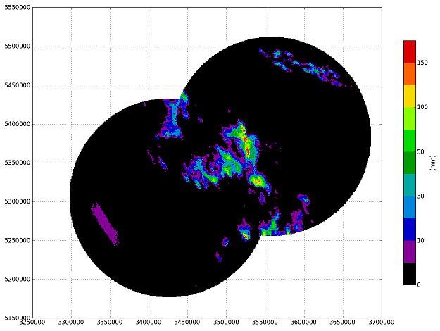
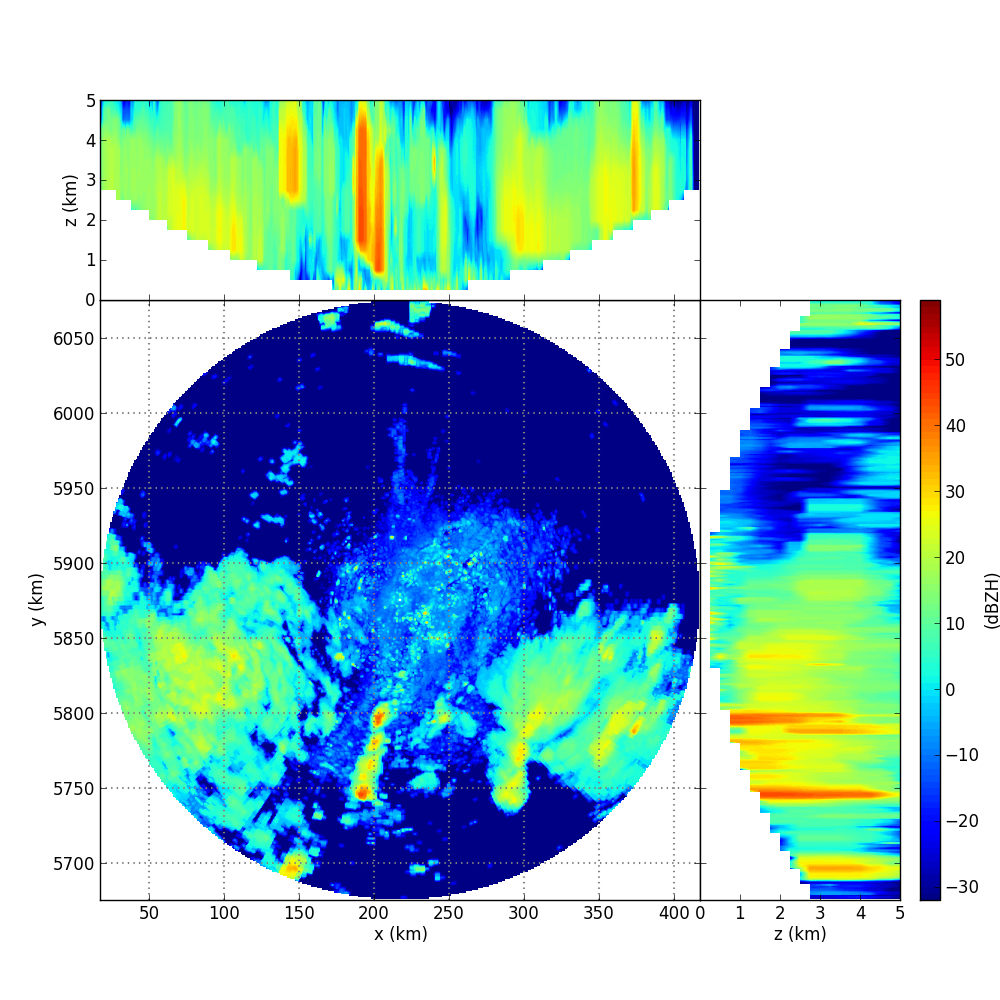

Recipes¶
How can I publish my recipe here?¶
This recipe section provides a collection of code snippets for exemplary wradlib applications. Compared to the Tutorials section, the level of documentation is a bit lower. For each recipe, we provide a short summary and a link to the example code.
Please feel to send us your recipes so we can include them on this page. Please send an e-mail to wradlib-dev@googlegroups.com containing:
- optional: name and affiliation
- a suggested title of the recipe
- a short decription of the recipe (max. 100 words)
- the recipe code (please add comments within the code!)
- optional: the data needed to run the code (or a hyperlink to the data)
- optional: some test output of the recipe (e.g. an image file)
Recipe #1: Clutter and attenuation correction plus composition for two DWD radars¶
This recipe shows a workflow to process radar data provided by the German Weather Service (DWD). The processing includes: (1) Reading local DX data for radars Feldberg and Tuerkheim. (2) Clutter correction using the Gabella filter algorithm. (3) Attenuation correction using the Kraemer algorithm. (4) Conversion from reflectivity to rainfall using the Z-R Conversions module. (5) Accumulation of rainfall depths over the entire event. (6) Composition of data from both radars to a common Cartesian grid (Gauss Krueger Zone 3). Composition is based on a weighted combination, using the sampling volume as a quality criterion (7) Plotting a rainfall map using cartesian_plot:
{kind=link}
(click image to enlarge)
Note
In order to run the recipe code, you need to place the extract the sample data into a directory data/ relative to the location of the recipe script.
Recipe #2: Reading and visualizing an ODIM_H5 polar volume¶
This recipe shows how extract the polar volume data from an ODIM_H5 hdf5 file (KNMI example file from OPERA), contruct a 3-dimensional Cartesian volume and produce a diagnostic plot. The challenge for this file is that for each elevation angle, the scan strategy is different.
{kind=link}
(click image to enlarge)
Note
In order to run the recipe code, you need to place the sample data into a directory data/ relative to the location of the recipe script.